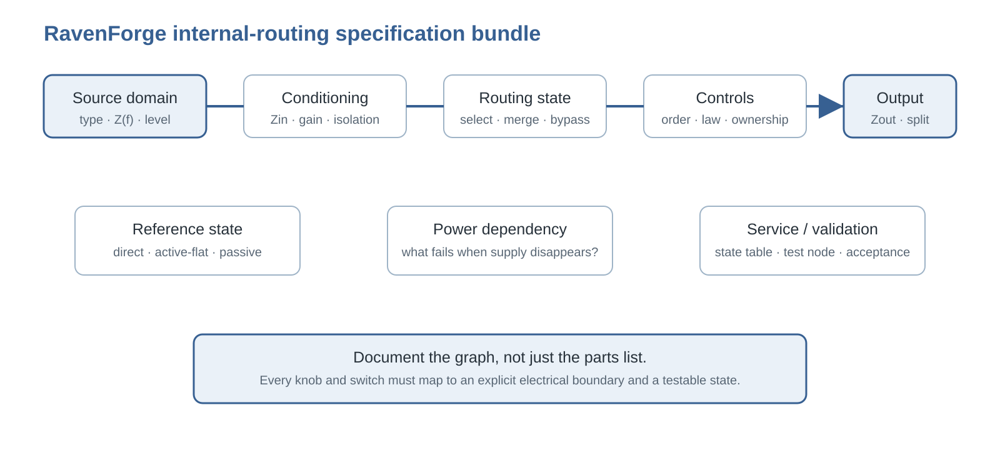

RAVENFORGE / SIGNAL & TRANSDUCTION RESEARCH LOG — B06
RAVENFORGE
Signal & Transduction / Electronics Architecture Research Log
B06 — Rethinking the Internal Signal Path
Designing internal instrument electronics as source domains, reference states, and a state-dependent routing graph
Document purpose |
| Code | B06 |
|---|---|
| Focus | internal routing · source domains · reference states · piezo/magnetic integration · selectable merge · split output · serviceability |
| Evidence | manufacturer documentation · historical product review · analog circuit application notes · secondary owner documentation · RavenForge synthesis |
| RavenForge link | B03 passive architecture → A06 active architecture → B06 internal routing → A07 headroom/power |
| Upstream logs | B03 · A05 · A06 |
| Downstream logs | A07 · C03 · C04 |
| Status | Literature / technical verification complete · routing framework established · prototype validation pending |
| Date | 2026-09-19 |
1. Research question — why is one serial chain not enough for internal instrument electronics?
A06 defined isolation, mixing, gain, EQ and output after the pickup-facing boundary as one active signal architecture [1]. B06 asks the next question: must those stages always be arranged as Pickup → Volume → Mix → EQ → Output? No. The actual path can change with source type, required input boundary, player-selected mode and reference state.
When an instrument combines electrically different sources such as an active magnetic pickup and a passive piezo, the key design question is not “which preamp?” but where each source is conditioned, where sources are merged, and which controls can be removed from the path. B06 therefore specifies internal electronics as a state-dependent routing graph rather than a parts list.
2. From linear chain to routing graph — document nodes and states, not only part order
A left-to-right chain is convenient until a mode switch creates a direct branch, a piezo receives its own buffer before joining the magnetic path, or Volume/Tone disappear in a reference state. At that point the circuit is a graph.
B06 working model |

Figure 1. Once direct-reference branches and source-specific conditioning exist, the signal path can no longer be represented accurately as one serial line.
3. Source domains — passive magnetic, active magnetic and piezo are not equivalent inputs
A passive magnetic pickup behaves as the frequency-dependent high-impedance source developed in A03–A05. An EMG 35DC/40DC is different: EMG specifies active operation, 10 kΩ output impedance and battery current for those pickups [5]. Its output is already an actively conditioned source.
A passive piezo presents another boundary. TI treats piezoelectric sensors as high-source-impedance devices for which high-input-impedance JFET/CMOS front ends are natural choices [9]. Fishman recommends a 10 MΩ impedance-matching buffer for passive piezo pickups and notes some bass roll-off even at 1 MΩ [8]. Putting magnetic and piezo sources into one undifferentiated input node is therefore not a defensible default.
4. Reference states — retire the single word “bypass”
Passive reference removes the active stage so a passive source again sees the external load directly. Active-flat keeps the active path but sets the EQ transfer nominally flat. Direct-source reference retains source electronics such as an active pickup preamp while bypassing downstream Volume/Tone/EQ/routing stages.
| State | Active stage remaining | External-load relation | Preferred term |
|---|---|---|---|
| Passive reference | None, or source itself is passive | Pickup network directly sees cable/input | Passive / true passive |
| Active-flat | Buffer/preamp/output stage | Low-Z output remains | Active-flat |
| Direct-source reference | Source electronics such as active pickup preamp | Only downstream controls are bypassed | Direct / Studio / EQ bypass |
5. Routing primitives — separate select, condition, merge, bypass and split
B06 decomposes complex systems into five primitives. Select chooses a source. Condition defines Zin, gain, bias and Zout. Merge combines branches. Bypass removes a stage. Split sends branches to separate outputs.
A “four-way mode switch” is therefore not enough documentation. Each position must be expressed as a state table showing which edges connect and which nodes are isolated.
6. ESH / Eshtronic — separate current official specifications from historical routing evidence
The current Stinger II page specifies two EMG 35DC pickups on the four-string or two 40DCs on the five-string, plus Volume, Tone, Pickup selector, Mode selector, active Esh-tronic electronics and an Esh Custom piezo bridge [2]. Esh also presents its piezo/Eshtronic concept as a defining innovation [3].
However, the current product page does not publish the routing of every Mode Selector position. A historical Stinger review documents a four-state Eshtronic revised in 2006 [4]. B06 uses that map as a historical documented implementation, not as proof that every current Stinger II uses an identical circuit. Owner-community diagrams [11–12] are useful corroboration but remain secondary evidence.
7. Historical Eshtronic state map — a Mode Selector that rewrites the signal graph
In the documented historical implementation, Position 1 sent the selected active EMG pickup(s) directly to output without the downstream preamp/control path, Volume or Tone. Position 2 used selected magnetic pickup(s) with Volume/Tone. Position 3 combined magnetic and bridge piezo through Volume/Tone, and Position 4 used piezo alone through those controls [4].

Figure 2. Conceptual map of the historically documented Eshtronic states. It is not a claim that the present circuit is identical.
The valuable idea is not the exact four-position wiring but the use of one state machine to define a direct reference, a controlled magnetic path, a merged path and a piezo-only path.
8. Studio/Direct is not passive — source electronics remain active
Calling that historical Direct/Studio state “passive” is electrically inaccurate. The review explicitly describes active EMG pickups [4], and EMG specifies the 35DC/40DC as powered pickups with 10 kΩ output impedance [5]. Bypassing downstream controls does not remove the pickup’s internal preamp.
Terminology rule |
9. Piezo boundary — why input impedance starts the branch design
In a simplified voltage-source model, if the piezo is represented by series capacitance Cp feeding input resistance Rin, the low-frequency corner moves approximately as fc ≈ 1/(2π·Rin·Cp). This is not a complete model of mechanical resonance and losses, but it captures why lower Rin increases low-frequency loading [8–9].
| Illustrative Cp | Rin = 1 MΩ | Rin = 10 MΩ | Boundary |
|---|---|---|---|
| 5 nF | ≈31.8 Hz | ≈3.18 Hz | Illustrative only; not an Esh measurement |
| 10 nF | ≈15.9 Hz | ≈1.59 Hz | Real bridge/front-end networks are more complex |
The first piezo specifications must therefore include sensor/output model, pickup-facing Zin, buffer placement, gain and output impedance.
10. Mixing — a blend control is an isolation and summing problem
When unlike sources share a node, their output impedances and control networks can load each other. A 50:50 knob position does not define the actual electrical mix. EMG’s B125 uses input buffers for each pickup and explicitly supports passive/passive, active/active and active/passive combinations [6], demonstrating how isolation before mixing changes the architecture.
For RavenForge magnetic + piezo systems, the default engineering question becomes source-specific conditioning → defined gain → summing. This does not make active summing mandatory in every case, but it rejects undefined passive paralleling as a default.
11. Control placement — identical knob labels can describe different circuits
Volume/Tone placed before a buffer, after a buffer, before mixing or after mixing changes loading and interaction. EMG specifies 25 kΩ controls after the low-Z B125 output rather than existing 250/500 kΩ controls [6]. The BQS-HZ documentation also gives an ABC → EQ → Master Volume chain while allowing Master Volume and EQ to swap order [7].
B06 therefore records control ownership and position: which source or bus a control acts on, and whether it disappears in a direct-reference state.
12. Split output — internal mixing and separate-source outputs serve different objectives
Owner documentation reports that some earlier Stinger II instruments provided a normal output plus a separate direct piezo output [11]. This cannot be generalized to all generations, but it demonstrates a real split-output architecture.
Split outputs enable independent FOH/recording processing but add connectors, routing and operational complexity. Internal merging simplifies stage use but gives up source-independent external processing. RavenForge therefore treats output count as a workflow decision, not a hierarchy of quality.
13. Switching transients and state transitions — mode count makes the transition itself a design object
Connecting nodes with different bias voltages or stored charge can create switching transients. Analog Devices documents click/pop reduction using break-before-make and shunt discharge in audio switching [10]. This does not prescribe a specific RavenForge switch IC, but it shows why “the path eventually connects” is not a sufficient criterion.
Validation must therefore include click/pop, level jump, mute interval and battery on/off behavior in addition to steady-state response.
14. Serviceability — evaluate routing complexity by diagnosability
A single rotary control can hide a large internal state machine. Without a state table and test nodes, faults in pickup source, piezo buffer, switch contacts, Volume/Tone, merge node or output stage become hard to isolate.
Each RavenForge state should be documented in the form selected source → active stage → controls → output, including what survives when power is lost. Player-facing naming must make the state legible, while the cavity layout must remain probeable and repairable.
15. Internal routing taxonomy — five baseline RavenForge architectures
| Type | Definition | Benefit | Risk |
|---|---|---|---|
| Sequential | All sources share one stage chain | Simple, serviceable | Can force unlike source boundaries together |
| Direct-reference | Branch bypasses downstream controls | A/B baseline, fault isolation | Often mislabeled passive; level mismatch possible |
| Source-specific parallel | Separate conditioning/filter branches | Optimizes each source domain | More parts and wiring |
| Selectable merge | Branches merge only in selected states | Flexible single output | Gain/phase/state management required |
| Split-output | Sources leave on separate outputs | External-processing freedom | Operational complexity |
16. RavenForge Internal Routing Specification Bundle
B06 extends A06 by adding graph and state data. A parts list cannot reproduce routing, so the following become mandatory specification fields.
| Source domain | passive magnetic / active magnetic / piezo / auxiliary, source Z(f), nominal level |
|---|---|
| Conditioning | pickup-facing Zin, gain, buffer location, Zout |
| Routing state | connected/disconnected branches for every switch position |
| Control ownership | which source/bus each Volume/Tone/Filter controls |
| Merge | passive parallel / buffered blend / active summing / none |
| Reference | passive / active-flat / direct-source / shaped |
| Power dependency | surviving path and failure behavior when supply disappears |
| Output | main/split, Zout, jack switching, recommended load |
| Transition | break/make behavior, click/pop, level jump, mute interval |
| Validation | response, level, noise, transient, test nodes and acceptance criteria by state |

Figure 3. Document the graph, not just the parts list.
17. Applying the framework to ASKR, EMBLA and EDDA
ASKR
With an active source such as the planned EMG 45TW family, bypassing the Tone Capsule should not be called true passive. The useful A/B reference is selected active pickup(s) → direct-source output versus selected pickup(s) → Tone Capsule → output. TW coil-mode selection and EQ bypass are separate state dimensions.
EMBLA
If passive pickups feed the planned ZUTA Bass Core, the design must first decide whether pickup interaction is intentionally retained before the preamp or whether branches are isolated before blending. A possible three-pickup option makes branch count, selector logic, gain matching and serviceability more important than generic “preamp compatibility.”
EDDA
EDDA’s 2 Volume / 2 Filter concept maps naturally to source-specific parallel processing. If each pickup owns its own filter before summing, the interaction differs fundamentally from a global EQ. The objective is not to copy Alembic/Wal control counts but to specify and validate per-source processing before merge.
18. Claim-by-Claim Evidence Matrix
| Claim | Direct evidence | Level | Boundary |
|---|---|---|---|
| Current Stinger II combines magnetic pickups, piezo and a Mode Selector | ESH official [2–3] | High | Current page does not publish mode routing |
| A 2006-revised historical Eshtronic used direct/controlled/merged/piezo-only states | Period review [4] | Medium–High | Identity with current circuit unverified |
| 35DC/40DC direct state is not passive | EMG active-pickup specs [5] | High | Specific to these pickups |
| Piezo sources can require high-Z conditioning | TI/Fishman [8–9] | High | Exact Rin depends on sensor/network |
| Per-input buffering can reduce direct source interaction and mix active/passive sources | EMG B125 [6] | High | Directly established for that implementation |
| Audio state switching requires click/pop consideration | Analog Devices [10] | High | RavenForge effect size not measured |
| Some earlier Stinger II instruments had a direct piezo second output | Owner-community material [11] | Low–Medium | Do not generalize across generations |
19. Research boundary and next log — topology now, headroom later
B06 stops at routing topology, source boundaries, reference states and state documentation. A07 — 9 V vs. 18 V: Headroom and Dynamic Range will separately examine supply voltage, bias, rail margin, gain, load and clipping.
C03 will map preamp/filter frequency response, while C04 will measure 9/18 V headroom, THD+N and clipping threshold. Mode-transition click/pop and state-level differences proposed here will enter the measurement protocol without claiming an effect size yet.
20. Source status / interpretation boundary
Current ESH architecture is taken from official manufacturer pages [2–3]. Because the current page does not publish exact Mode Selector routing, the detailed state map comes from a historical review [4]. Bassic and TalkBass material [11–12] is treated only as secondary evidence useful for generation tracking.
No undocumented claim is made about actual Esh Custom piezo capacitance, current Eshtronic gain distribution, buffer topology or switch-contact scheme. RavenForge applications are design proposals that require later schematic and prototype verification.
21. Current conclusion — internal electronics are an explicit state machine, not one line of circuitry
Current conclusion |
The useful lesson from ESH is not to clone one four-way rotary switch. It is to separate source domains, create a meaningful direct reference when useful, and choose whether magnetic and piezo branches should merge or remain split. The cost of that flexibility must be paid in state visibility, transition behavior, level consistency and serviceability. From B06 onward, RavenForge electronics documentation should begin with what path the signal takes in each state, not merely which parts are installed.
References
[1] RavenForge. “A06 — Onboard Preamp Architecture.” Signal & Transduction Research Log, 2026-09-18.
[2] Esh Basses. “Stinger II.” Current official specifications: EMG 35DC/40DC, Volume, Tone, Pickup selector, Mode selector, Esh-tronic special active electronics, Esh Custom piezo bridge. https://www.esh-bass.com/products/32474-stinger-ii
[3] Esh Basses. Official homepage. Describes the Eshtronic as a distinctive modern piezo system central to the brand. https://www.esh-bass.com/
[4] Musiccraft24. “The Dark Side of Esh” / Stinger review. Documents a 2006-revised Eshtronic with four Mode Selector states: Direct/Studio, magnetic + Volume/Tone, magnetic + piezo, and piezo-only. https://www.musiccraft24.de/index.php?eID=dumpFile&f=8219&t=f&token=d7ee41d92e4bb2fabca7bf3e35be4ba8725803c4
[5] EMG Pickups. “David Ellefson Signature Set — 35DC/35CS, 40DC/40CS.” 35DC/40DC output impedance 10 kΩ, current 235/230 µA @9 V, maximum supply 27 V. https://www.emgpickups.com/pub/media/Mageants/d/e/de_signature_set_instructions_0230-0351rb.pdf
[6] EMG Pickups. “B125 Active Balance Control.” Per-pickup input buffers, active/passive source compatibility, 500 kΩ input and 2 kΩ output; 25 kΩ controls recommended in the downstream low-Z domain. https://www.emgpickups.com/pub/media/Mageants/a/b/abc_0230-0095rl_1.pdf
[7] EMG Pickups. “BQS-HZ System.” Official wiring note showing ABC → EQ → master volume, with master/EQ order allowed to swap, in a low-Z control domain. https://www.emgpickups.com/pub/media/Mageants/h/z/hz_bqshz_system_0230-0214rm_2.pdf
[8] Fishman. “M-100 / AG Series Installation Guide.” Recommends a 10 MΩ impedance-matching buffered preamp for passive piezo and notes bass roll-off at 1 MΩ. https://fishman.com/wp-content/uploads/2025/06/m_100_mandolin_pickup_installation_guide.pdf
[9] Texas Instruments. “Signal Conditioning Piezoelectric Sensors,” SLOA033A. Discusses high piezo source impedance and high-input-impedance JFET/CMOS front ends. https://www.ti.com/lit/an/sloa033a/sloa033a.pdf
[10] Analog Devices. “Selecting the Right CMOS Analog Switch.” Discusses click/pop transients in audio switching and the role of break-before-make and shunt discharge. https://www.analog.com/en/resources/design-notes/selecting-the-right-cmos-analog-switch.html
[11] Bassic.de. “Esh Bass Enthusiasten Heimat.” Long-running owner-community material on Eshtronic generations and second piezo outputs on some Stinger II instruments; treated as secondary evidence, not manufacturer documentation. https://www.bassic.de/threads/esh-bass-enthusiasten-heimat.14856522/
[12] TalkBass. “ESH bass club.” Owner description of Eshtronic mode mapping; secondary testimony. https://www.talkbass.com/threads/esh-bass-club.697883/page-3
[13] RavenForge. “B03 — Passive Tonal Architecture.” Signal & Transduction Research Log, 2026-09-17.